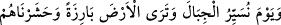

“Hepsi” yâni bütün mahlûkât “boyunları bükük olarak” zelil bir halde “O’na
gelirler.”
Yâni soru-cevap, münâkaşa ve hesab için izzet sâhibi Rablerinin huzuruna gelirler.
88. Sen dağları görürsün de, onları yerinde durur sanırsın. Oysa onlar bulutların
yürümesi gibi yürümektedirler. (Bu,) her şeyi sapasağlam yapan Allah’ın sanatıdır.
Şüphesiz ki O, yaptıklarınızdan tamamıyla haberdardır.
Bu âyet önceki âyete atfedilmiştir ve onunla beraber hatırlatma hükmüne dâhildir.
“Sen” o gün “dağları görürsün de, onları yerinde durur sanırsın. Oysa onlar
bulutların yürümesi gibi yürümektedirler.” Sen dağları gözünle sâkin olarak görürsün,
halbuki onlar rüzgarın hızla hareket ettirdiği/yürüttüğü bulutlar gibi yürümektedirler.
Çünkü göz, her büyük ve çok olan şeyi görmekten âciz kalır, büyük ve çok olduğundan
dolayı onu ihâta edemez/tamamını göremez. O yürüdüğü/hareket ettiği halde bakan
kimse onun durduğunu zanneder.
İşte bu da ikinci defa sûra üfürülmesinden sonra mahlûkâtın haşrı/toplanması
sırasında meydana gelecektir. Çünkü Allah Teâlâ yeryüzünü başka bir yeryüzü hâline
çevirir, şekillerini değiştirir, mahşer halkının görmesi için zikredilen korkunç şekilde
dağları bulundukları yerlerden kaldırıp yürütür. Dağlar, her ne kadar birinci defa sûra
üfürüldüğünde parçalanmış, ufalmış ve yerle bir olmuş olsalar da, onların yürütülmesi
ve yeryüzünün tesviyesi ikinci defa sûra üfürüldükten sonra olacaktır. Nitekim şu âyet
bunu anlatmaktadır: “
O gün dağları
yerinden götürürüz ve yeryüzünün çırılçıplak olduğunu görürsün. Hiçbirini
bırakmaksızın onları (tüm ölüleri) mahşerde toplarız.” (el-Kehf, 18/47) Bu âyette
kendisine atfedilen (
ve
) gelecek zaman olduğu halde atfedilenin (
)
mâzî/geçmiş zaman olması, haşrin dağların yürütülmesi ve yeryüzünün çıplak
görülmesinden önce olduğuna delâlet etmesi içindir. Sanki “Onları daha önce topladık.”
buyrulmuştur.
Ca’fer Huldî der ki: “Cüneyd, arkadaşları ve ihvanıyla bir semâ meclisinde bulundu.
Onlar coştular ve hareket ettiler. Cüneyd ise kendi hâlinde kaldı ve semâ ona tesir
etmedi. Arkadaşları ona: “Kardeşlerin gibi sen de coşup neşelensen olmaz mı?”
dediler. Cüneyd şöyle cevap verdi: “Sen dağları görürsün de, onları yerinde durur
sanırsın. Oysa onlar bulutların yürümesi gibi yürümektedirler.”
Bazıları demiştir ki: “Ehlullahdan çoğu temkîn ehlidir, nefisleriyle sakin, sırlarıyla
melekût âleminde dolaşmaktadırlar.”
Bir muhakkık şöyle demiştir: “Veliler de halk arasında olup onların âdet ve